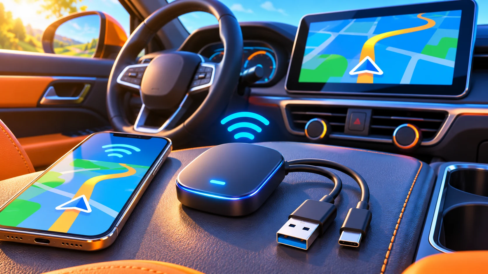

Android Auto · Field note 069
Motorola MA2 reaches U.S. buyers at $69.99
The wireless Android Auto adapter adds phone switching and interchangeable USB connections.

Motorola’s MA2 wireless Android Auto adapter is now available in the United States, 9to5Google reported November 11. The Amazon listing is $69.99, above the $39.95 price originally discussed.
The MA1 successor adds a physical power switch, pairing for multiple phones, and a button for switching between paired devices or entering pairing mode.
Both USB-A and USB-C cables are included, making the connection more flexible across car setups.
The MA2 was first announced in March; today’s news concerns retail availability. The higher final price is worth checking against the listing before buying.
The source currently reports mid-to-late December delivery estimates on Amazon, which may vary by location and change after launch.